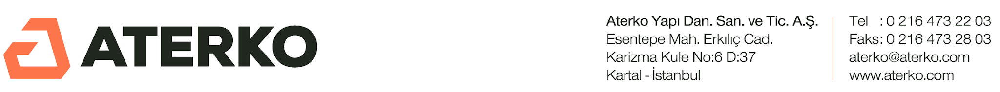

Günlük Satınalma Raporu
{{TARIH}}
{{KPI_GECIKEN}}
Termini Geçen
{{KPI_YAKLASAN}}
Termin Yaklaşan
{{KPI_BEKLEYEN_SIPARIS}}
Onay Bekleyen Sipariş
{{KPI_ACIK_TALEP}}
Açık Talep
{{KPI_KRITIK_STOK}}
Kritik Stok
🔴 Termini Geçen Siparişler
{{TABLO_GECIKEN}}
⏰ Termini Yaklaşan Siparişler (7 gün)
{{TABLO_YAKLASAN}}
🧾 Onay Bekleyen Siparişler
{{TABLO_BEKLEYEN_SIPARIS}}
📌 Bekleyen Talepler (onay/işlem bekleyen)
{{TABLO_BEKLEYEN_TALEP}}
📦 Kritik Stok Seviyesi
{{TABLO_KRITIK_STOK}}